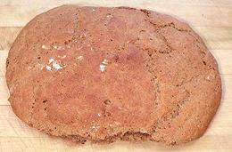
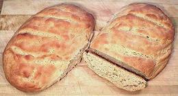

SAFARI
Users
Finnish Sour Rye Bread
 [Hapanleipa (Finland)]
This photo is from from our recipe
Sour Rye Bread.
In eastern Finland, this bread is made into fairly thick loaves and
baked about twice a week. In western Finland it is traditionally made
into thin loaves the shape of millstones (with a hole in the center).
In the west it is baked twice a year and strung up on poles until hard,
then stored in a special room. The eastern Finns think the millstone
shape is quite appropriate for this hard dry bread. Our example was
probably half way between the eastern and western versions. This bread
is traditionally made up in a large stone bowl. The bowl is not washed
and bits of dough dried to the sides act as starter for the next batch.
Finnish Barley Bread
 [Ohraleipa (Finland)]
This photo is from from our recipe
Barley Bread.
Barley is a grain which grows pretty well under very adverse climate
and soil conditions, and was the major grain in some regions in
prehistoric times. Our recipe would not be considered "authentic" by
purists, as it does incorporate some wheat flour. On the other hand,
I think Finns have sold enough telecom equipment by now to afford an
occasional bag of imported wheat flour.
Swedish Crispbread
[Knäckebröd, Hart bröd, Hardbröd, Spisbröd, Knäcke (Swedish); Knækbrød (Danish); Knekkebrød (Norwegian); Näkkileipä (Finnish); Näkileib (Estonian); Icelandic: Hrökkbrauð (Icelandic); Knekkbreyð (Faroese); Knäckebrot, Knäcke (German); Knackbrood (Low German); Knäckebröd (Dutch)]
Production of Crispbread began in Sweden about 500 CE, and it remains
very popular throughout northern Europe. It always had a hole in the
middle so it could be strung on long poles, which were suspended from
the rafters of the home, a storage method also used in Finland. It was
made twice a year, after harvest and in spring. It was made of whole
grain Rye flour, salt and water. Before baking, crushed ice was kneaded
into the dough which would lighten it when evaporation left holes in the
bread. The photo specimen, Leksands brand, was made in Sweden. Ingred:
Rye flour, water, yeast, salt.